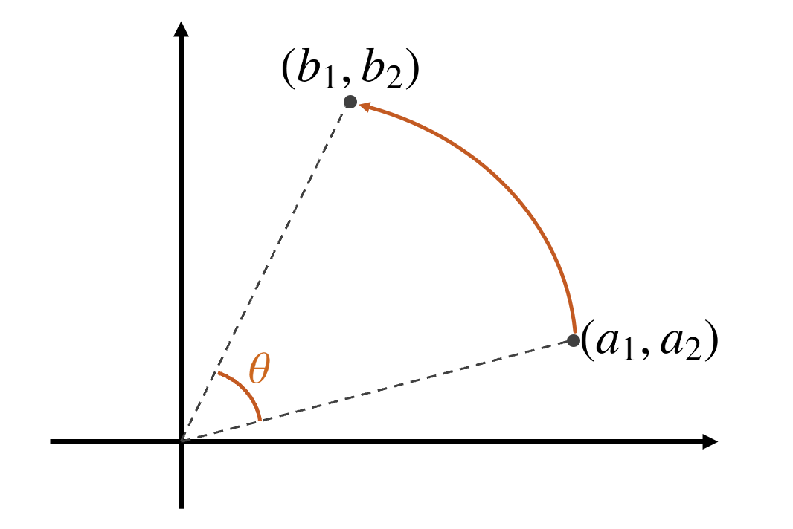

回転
座標の回転について簡単に説明
座標の回転
座標の回転
座標(b_1,b_2) を数式で書くと
(b_1,b_2) = (a_1 \cos \theta - a_2 \sin \theta, a_1 \sin \theta + a_2 \cos \theta)
つまり、
\begin{aligned}
b_1 &= a_1 \cos \theta - a_2 \sin \theta \\
b_2 &= a_1 \sin \theta + a_2 \cos \theta
\end{aligned}
Rでやってみる
座標(3,1)の点を60度回転させると
コード
<- 3 <- 1 <- 60 * pi / 180 <- a1 * cos (theta) - a2 * sin (theta)<- a1 * sin (theta) + a2 * cos (theta)<- data.frame (x = c (0 , a1, b1),y = c (0 , a2, b2)plot (dfx, xlim = c (- 1 , 4 ), ylim = c (- 1 , 4 ), asp = 1 )abline (h = 0 , v = 0 )
公式の証明
座標(a_1,a_2) から座標(b_1, b_2) への回転は，原点から座標(a_1, a_2) までの距離をr ，偏角を\alpha とする。
このときa_1 = r \cos \alpha ，a_2 = r \sin \alpha である。
コサインの加法定理を用いると，次のように書ける。
\begin{aligned}
b_1 &= r \cos (\alpha + \theta)\\
&= r \cos \alpha \cos \theta - r \sin \alpha \sin \theta \\
&= a_1 \cos \theta - a_2 \sin \theta
\end{aligned}
となり，b_2 も同様に求められる。
行列で表現すると
\begin{pmatrix}
b_1\\
b_2
\end{pmatrix}
=
\begin{pmatrix}
\cos \theta & -\sin \theta\\
\sin \theta & \cos \theta
\end{pmatrix}
\begin{pmatrix}
a_1\\
a_2
\end{pmatrix}
となる。 記号をつかってシンプルにすると，
\boldsymbol{b} = \boldsymbol{A}\boldsymbol{a}
と書け，\boldsymbol{A} を回転行列とよぶ。 ベクトル\boldsymbol{a} を回転行列\boldsymbol{A} で回転させると\boldsymbol{b} になる，ということ
前提知識：固有値と固有ベクトル
行列にはそれぞれ対応する固有値 と固有ベクトル がある。
さきほどの\boldsymbol{b} を-\theta だけ回転させると\boldsymbol{a} になる。
\begin{pmatrix}
\cos (-\theta) & -\sin (-\theta)\\
\sin (-\theta) & \cos (-\theta)
\end{pmatrix}
\begin{pmatrix}
b_1\\
b_2
\end{pmatrix}
=
\begin{pmatrix}
a_1\\
a_2
\end{pmatrix}
シンプルにすると，
\boldsymbol{A}^{-1} \boldsymbol{b} = \boldsymbol{A}^{-1} \boldsymbol{A} \boldsymbol{a} = \boldsymbol{a}
固有値と固有ベクトル
この行列\boldsymbol{A} の固有値とは，
\boldsymbol{A}\boldsymbol{b} = \lambda \boldsymbol{b}
を満たす\lambda のことである。 p 行p 列の行列\boldsymbol{A} の固有値は原則p 個存在する。
対称行列
対称行列とは，転置行列と元の行列が等しい行列のことである。ようするに，対角線を軸にして左右が対称になっている行列のことである。
\boldsymbol{A} =
\begin{pmatrix}
A & B & C\\
B & A & D\\
C & D & A
\end{pmatrix}
対称行列は，固有値が実数であることが知られている。
対称行列と固有値・固有ベクトル
細かい話しは飛ばしてしまって，実は対称行列の固有値と固有ベクトルは，以下のようになる。 \boldsymbol{A} を3\times3 の対称行列とし，その固有値を\lambda_1 > \lambda_2 > \lambda_3 とする。
\begin{align*}
\boldsymbol{A} &=
\begin{pmatrix}
\sqrt{\lambda_1} \times \text{1固有ベクトル} & \sqrt{\lambda_2} \times \text{2固有ベクトル} & \sqrt{\lambda_3} \times \text{3固有ベクトル}\\
\sqrt{\lambda_1} \times \text{1固有ベクトル} & \sqrt{\lambda_2} \times \text{2固有ベクトル} & \sqrt{\lambda_3} \times \text{3固有ベクトル}\\
\sqrt{\lambda_1} \times \text{1固有ベクトル} & \sqrt{\lambda_2} \times \text{2固有ベクトル} & \sqrt{\lambda_3} \times \text{3固有ベクトル}
\end{pmatrix}\\
&\times
\begin{pmatrix}
\sqrt{\lambda_1} \times \text{1固有ベクトル} & \sqrt{\lambda_1} \times \text{1固有ベクトル} & \sqrt{\lambda_1} \times \text{1固有ベクトル}\\
\sqrt{\lambda_2} \times \text{2固有ベクトル} & \sqrt{\lambda_2} \times \text{2固有ベクトル} & \sqrt{\lambda_2} \times \text{2固有ベクトル}\\
\sqrt{\lambda_3} \times \text{3固有ベクトル} & \sqrt{\lambda_3} \times \text{3固有ベクトル} & \sqrt{\lambda_3} \times \text{3固有ベクトル}
\end{pmatrix}\\
\end{align*}
固有値が小さいと
例えば，固有値\lambda_3 がほぼゼロだとすると，さっきの式は，
\begin{align*}
\boldsymbol{A} &=
\begin{pmatrix}
\sqrt{\lambda_1} \times \text{1固有ベクトル} & \sqrt{\lambda_2} \times \text{2固有ベクトル} \\
\sqrt{\lambda_1} \times \text{1固有ベクトル} & \sqrt{\lambda_2} \times \text{2固有ベクトル} \\
\sqrt{\lambda_1} \times \text{1固有ベクトル} & \sqrt{\lambda_2} \times \text{2固有ベクトル}
\end{pmatrix}\\
&\times
\begin{pmatrix}
\sqrt{\lambda_1} \times \text{1固有ベクトル} & \sqrt{\lambda_1} \times \text{1固有ベクトル} & \sqrt{\lambda_1} \times \text{1固有ベクトル}\\
\sqrt{\lambda_2} \times \text{2固有ベクトル} & \sqrt{\lambda_2} \times \text{2固有ベクトル} & \sqrt{\lambda_2} \times \text{2固有ベクトル}
\end{pmatrix}\\
\end{align*}
となり，行列\boldsymbol{A} は，2つの固有値\lambda_1 と\lambda_2 の固有ベクトルの線形結合で表すことができる。
因子分析の例
いま、5つの変数のそれぞれが、2個の変数f_1 とf_2 で決まっている、と仮定する。 つまり、
\begin{align*}
Y_1 & \fallingdotseq a_{11} f_1 + a_{12} f_2\\
Y_2 & \fallingdotseq a_{21} f_1 + a_{22} f_2\\
\vdots\\
Y_5 & \fallingdotseq a_{51} f_1 + a_{52} f_2\\
\end{align*}
連立方程式を行列表記する
行列で表現すると、
\begin{align*}
\underbrace{
\begin{pmatrix}
Y_1\\
\vdots \\
Y_5
\end{pmatrix}
}_{5\times 1}&=
\underbrace{
\begin{pmatrix}
a_{11} & a_{12}\\
\vdots & \vdots\\
a_{51} & a_{52}\\
\end{pmatrix}
}_{5 \times 2}
\underbrace{
\begin{pmatrix}
f_{1} \\
f_{2}
\end{pmatrix}
}_{2 \times 1}
\end{align*}
まとめて書くと
\boldsymbol{Y} = \boldsymbol{A}\boldsymbol{f}
となる。
線形写像
つまり，潜在的な因子を表す\boldsymbol{f} を因子負荷量行列\boldsymbol{A} で観察された変数\boldsymbol{Y} へと線形写像している，というモデルを考える。 この\boldsymbol{A} と\boldsymbol{f} を決定する必要がある。
モデルの表現
上のモデルに観測値との誤差\varepsilon_i を加え、
Y_i = \alpha _{i1}f_1 + \alpha_{i2}f_2 + \varepsilon_i, \quad i = 1,\dots ,5
とすると、5本の重回帰モデルと見なせる。 この\varepsilon の分散\sigma_i^2 は独自因子 とよばれる。 しかし回帰分析と違うところは，Y_i のみ観察可能で，\alpha_{i1} も\alpha_{i2} もf_1 もf_2 も観察できない点である。 手元にあるデータは，n 人から回収したアンケートより入手できた回答項目5個についての回答結果となるY_i, \quad i = 1,\dots , 5 のみである。
モデルの仮定
そこでY_i に一定の仮定を置くことで、\alpha とf を探す方法を考える。
f_1 とf_2 はiidで、平均ゼロ、分散1となる確率変数f_i と\varepsilon_i は独立、Cov(f_i,\varepsilon_i) = 0 )\varepsilon _i と\varepsilon_j は独立
目的変数Y_i の間の相関係数を利用して、偏回帰係数に対応する因子負荷量a_{ij} を推定する。
因子分析の仮定
共通因子に関する仮定(1)と(2)から、
\begin{align*}
\mathrm{Var}(Y_i) &= \mathrm{Var}(a_{i1}f_1 + a_{i2}f_2 + \varepsilon_i)\\
&= a_{i1}^2\mathrm{Var}(f_1) + a_{i2}^2\mathrm{Var}(f_2) +{Var}(\varepsilon_i)\\
&= a_{i1}^2 + a_{i2}^2 + \sigma_i^2
\end{align*}
が導出される。1行目から2行目の変形に仮定2、2行目から3行目の変形に仮定1を用いている。
共通性と独自因子
変数Y_i の分散は、共通性と独自因子に分けられる。
\mathrm{Var}(Y_i) = \underbrace{a_{i1}^2 + a_{i2}^2}_{第i変数の共通性} + \underbrace{\sigma_i^2}_{独自因子}
共通因子がゼロのとき，Y_i の分散は独自因子の分散で決定されている。
因子分析
変数Y_i を標準化し、\mathrm{Var}(Y_i) = 1 としているとき、共通性は以下のように表すことができる。
\begin{align*}
1 &= a_{i1}^2 + a_{i2}^2 + \sigma_i^2 \\
a_{i1}^2 + a_{i2}^2 &= 1 - \sigma_i^2
\end{align*}
Y_i の分散から独自因子\varepsilon_i の分散を除いた残りが共通性であり、 2つの共通因子f_1 、f_2 で説明できる部分を表している。 これが因子分析における決定係数R^2 に対応する統計量となる。
因子の適合度
5本の方程式全体の適合度は、この共通性の合計して、全変数の分散の和に占める割合は，
\frac{\sum _{i=1}^5 (a_{i1}^2 + a_{i2}^2)}{\sum _{i=1}^5 \mathrm{Var}(Y_i)} =
\frac{\sum _{i=1}^5 (a_{i1}^2 + a_{i2}^2)}{\sum _{i=1}^5 1} =
\frac{\sum _{i=1}^5 (a_{i1}^2 + a_{i2}^2)}{5}
で定義される。 ここで，\mathrm{Var}(Y_i) = 1 を用いている。 これを寄与率 (contribution ratio)とよぶ。
モデルの推定
観測された変数Y_i の相関の大きさを用いて因子負荷量a_{ij} と独自因子\sigma_i といったパラメータを推定する。 まずは観測された変数の共分散行列を因子分析モデルのパラメータで表現する。
共通因子の仮定3より、\varepsilon_i と\varepsilon_j は独立であるため、その共分散はゼロとなる。 よってY_i とY_j の共分散は、
\begin{align*}
\mathrm{Cov}(Y_1, Y_2) &= a_{11}a_{21}\mathrm{Var}(f_1) + a_{12}a_{22}\mathrm{Var}(f_2) + \mathrm{Cov}(\varepsilon_i, \varepsilon_j)\\
&= a_{11} a_{21} + a_{12}a_{22}
\end{align*}
因子分析の実践
library (psych) # 心理学用パッケージ library (tidyverse) # いつもの library (ggthemes) # 図をきれいに library (knitr) # 表をキレイに library (kableExtra) # 表をキレイに :: opts_chunk$ set (dev = "ragg_png" )theme_set (theme_few (base_size = 12 ))update_geom_defaults ("point" , list (size = 3 ))
データの読み込み
今回はテキストファイル.txtを読み込むので、readrパッケージのread_table()関数を用いる。
<- readr:: read_table ("https://so-ichi.com/senbei.txt" ):: kable (df_senbei) |> kable_styling (font_size = 20 )
ハッピーターン
89
63
32
51
37
雪の宿
73
46
25
48
32
ぽたぽた焼き
65
45
17
32
21
黒豆せんべい
72
33
2
50
9
まがりせんべい
70
29
11
35
21
チーズアーモンド
71
20
10
38
24
手塩屋
71
38
3
38
13
ばかうけ
48
39
10
16
16
粒より小餅
49
26
17
27
30
田舎おかき
51
16
1
38
5
うまい！堅焼き
48
15
4
36
1
データの整形
このデータフレームには、製品名、味、パッケージデザイン、広告宣伝、素材栄養素、キャンペーンイベントという6つの変数から構成されている。分析を容易にするため製品名を行名にするため、tibbleパッケージのcolumn_to_rownames()関数を用いる。
<- column_to_rownames (df_senbei, "製品名" )|> head () |> kable () |> kable_styling (font_size = 20 )
ハッピーターン
89
63
32
51
37
雪の宿
73
46
25
48
32
ぽたぽた焼き
65
45
17
32
21
黒豆せんべい
72
33
2
50
9
まがりせんべい
70
29
11
35
21
チーズアーモンド
71
20
10
38
24
データの詳細
製品ごとに、味やパッケージデザイン、広告宣伝、素材栄養素、キャンペーンイベントの5項目について得点が付されている。
Rで因子分析を行うには、psychパッケージのfa()関数を用いる方法と、基本関数のfactanal()関数を用いる方法がある。
fa()関数を用いた場合
まず相関係数行列を作成する。
相関係数行列
この相関係数行列をみると、
味と素材栄養素
パッケージデザインと広告宣伝
広告宣伝とキャンペーンイベント
の相関係数が非常に高いことがわかる。
Kaiser-Meyer-Olkinの標本妥当性の測度
カイザー・マイヤー・オルキン (Kaiser-Meyer-Olkin：KMO) 検定は，データが因子分析にどの程度適しているかを決定する統計的尺度である。 この検定は，モデル中の各変数と完全なモデルのサンプリングの妥当性を測定する。 この統計量は，共通分散であるかもしれない変数間の分散の比率の尺度である。 KMO値が高いほどデータが因子分析により適しているといえる(by wikipedia)。
KMO
KMO = \displaystyle \frac{\sum _{j\not=k} \sum _{k \not = j} r^2_{jk}}{\sum _{j \not =k} \sum _{k \not = j} r^2_{jk} + \sum _{j \not =k} \sum _{k \not = j} p^2_{jk}}
ここでr_{jk} は，問題の変数と他の変数との相関係数であり，p_{jk} は偏相関である。
KMOが0.9を超えると素晴らしい，0.80を超えると立派
0.70を超えると中程度，0.60を超えると普通，
0.50を超えるだけだと悲惨，0.5を下回ると受け入れられない
という解釈
RでKMO
RでKMO値を求めるには、psychパッケージのKMO()関数を用いる。 KMO()の引数はデータフレームなので、必要な変数のみを入れておく。
Kaiser-Meyer-Olkin factor adequacy
Call: KMO(r = df_senbei)
Overall MSA = 0.44
MSA for each item =
味 パッケージデザイン 広告宣伝
0.44 0.50 0.47
素材栄養素 キャンペーンイベント
0.30 0.46
各項目が0.6以上あれば適切らしい。ぜんぶ0.6未満やん。カイザー基準だと悲惨な状態である。
因子分析を行う。
すべての変数間の相関係数をcor()関数で計算
<- cor (df_senbei, use = "complete.obs" ) |> round (digits = 3 ):: kable (correlation) |> kable_styling (font_size = 20 )
味
1.000
0.672
0.512
0.750
0.550
パッケージデザイン
0.672
1.000
0.757
0.298
0.658
広告宣伝
0.512
0.757
1.000
0.242
0.911
素材栄養素
0.750
0.298
0.242
1.000
0.176
キャンペーンイベント
0.550
0.658
0.911
0.176
1.000
観測変数間の相関行列が求まりました。
因子の数を決める
psychパッケージのfa.parallel()関数で、スクリーンプロットを作成し因子の数を検討 因子分析では，因子の数を何個に設定するかは分析者の自由 である。
fa.parallel (correlation, n.obs = 11 , fa = "fa" ) # スクリープロットを表示
因子の数を決める
Parallel analysis suggests that the number of factors = 2 and the number of components = NA
abline ( h = 0 ) # y = 0 の横線を追加
因子の数を決める
fa.parallel()の結果から，因子数は2が提案されている。
このグラフは何を表しているのかというと，横軸が因子数 ，縦軸が固有値 (eigen values)を表している。
固有値 は因子分析で用いられる共通因子の数を決定するための非常に重要な数値
詳しくは「経営のための数学」の線形代数 で学習しておきましょう。
因子負荷の推定
= fa (correlation,nfactors = 2 , # 因子の数 fm = "minres" ,# 最小二乗法 rotate = "varimax" , # 軸の回転 use = "complete.obs" # 欠損値 print ( result, digits = 3 , sort = T )
fa()関数の引数は相関係数行列、因子数、回転法、欠損値の扱いなどを指定 minresは最小二乗法、varimaxは軸の直交回転法の1つ
因子負荷の推定
Factor Analysis using method = minres
Call: fa(r = correlation, nfactors = 2, rotate = "varimax", fm = "minres",
use = "complete.obs")
Standardized loadings (pattern matrix) based upon correlation matrix
item MR1 MR2 h2 u2 com
広告宣伝 3 0.985 0.158 0.995 0.00458 1.05
キャンペーンイベント 5 0.890 0.168 0.819 0.18055 1.07
パッケージデザイン 2 0.698 0.374 0.627 0.37290 1.53
味 1 0.414 0.921 1.020 -0.01958 1.39
素材栄養素 4 0.078 0.764 0.591 0.40950 1.02
MR1 MR2
SS loadings 2.427 1.625
Proportion Var 0.485 0.325
Cumulative Var 0.485 0.810
Proportion Explained 0.599 0.401
Cumulative Proportion 0.599 1.000
Mean item complexity = 1.2
Test of the hypothesis that 2 factors are sufficient.
df null model = 10 with the objective function = 4.853
df of the model are 1 and the objective function was 0.756
The root mean square of the residuals (RMSR) is 0.03
The df corrected root mean square of the residuals is 0.096
Fit based upon off diagonal values = 0.997
因子分析のパス図
fa.diagram (result) # 因子の図
因子負荷量
print (result$ loadings, digits = 2 , cutoff = 0.3 )
Loadings:
MR1 MR2
味 0.41 0.92
パッケージデザイン 0.70 0.37
広告宣伝 0.99
素材栄養素 0.76
キャンペーンイベント 0.89
MR1 MR2
SS loadings 2.43 1.63
Proportion Var 0.49 0.33
Cumulative Var 0.49 0.81
基本関数factanalの場合
<- factanal (df_senbei,factor= 2 , # 因子数 rotation= "varimax" , # 回転 scores= "regression" # 推定法 biplot (f1$ scores, f1$ loading)
factanal()関数で因子分析を行い、biplot()で因子負荷量をプロットすると、図のようになる。横軸が因子1、縦軸が因子2となる。
第1因子と第2因子の因子負荷量
# 第1因子と第2因子の因子負荷量 <- rbind (f1$ loading[,1 ], f1$ loading[,2 ])<- data.frame (t (f1_loading))colnames (f1_loading) <- c ("マーケティング因子" ,"製品因子" )<- data.frame (f1$ scores)
作図
library (ggrepel)<- ggplot ()<- g + geom_point (data = f1_scores,aes (x = Factor1, y = Factor2,)# チーム名を描画 <- g + geom_text_repel (data= f1_scores,aes (x = Factor1, y = Factor2, label= rownames (f1_scores)),alpha= 0.9 ,size= 3 print (g)